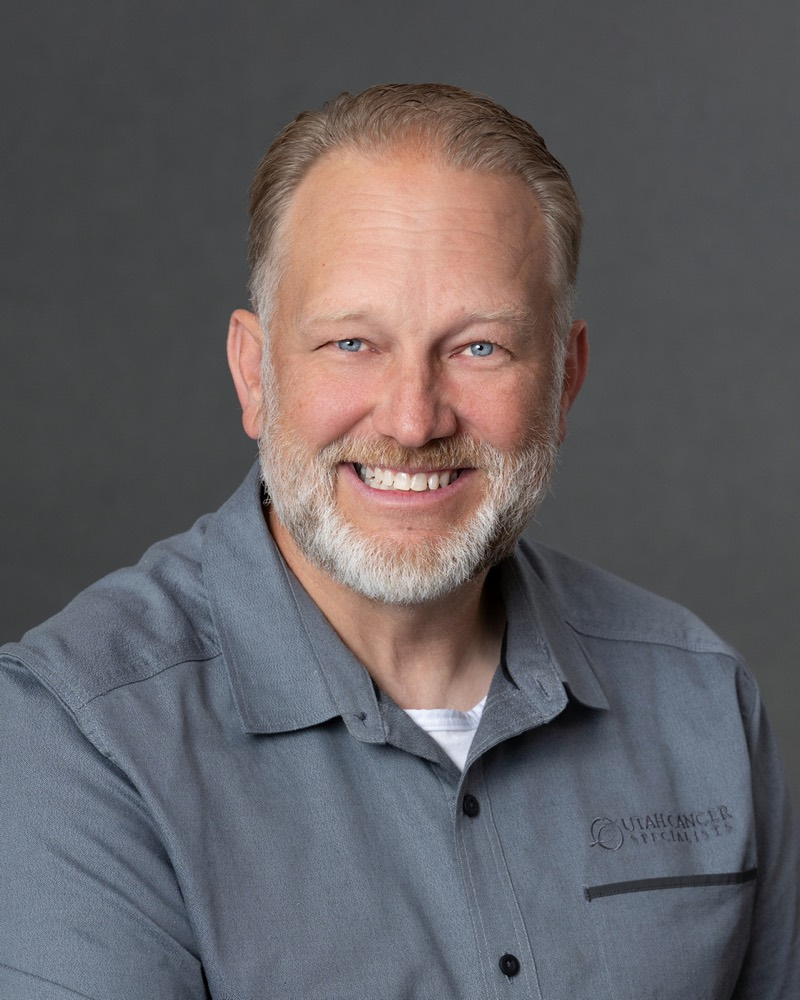

Ben brings 28 years of information technology leadership experience, including 26 years with Utah Cancer Specialists. Before joining UCS, he worked as part of a regional IT team with CommonSpirit Health. His professional certifications include MCSE, CompTIA A+, CNE, and CCSA.
Although Ben was initially hesitant about making the move into healthcare, his experience at UCS quickly changed his perspective. Working alongside physicians who are genuinely compassionate and deeply committed to their patients has given his work a greater sense of purpose. He values being part of an organization where technology and infrastructure ultimately support the people providing care.
Ben is especially encouraged by UCS’s growing focus on the patient experience. He is excited to see the organization continue looking at its services, systems, and decisions through the eyes of the patient and finding new ways to make their experience better.
For Ben, exceptional care begins with truly knowing the patient and understanding what they need. He believes that the better we understand each individual, the better equipped we are to provide the care, support, and experience that are right for them.
Outside of work, Ben is happiest outdoors. He enjoys exploring Jeep trails throughout Southern Utah, hiking and skiing in the nearby mountains, and traveling to experience different parts of the world. He also enjoys golfing with his daughters, tackling challenging Jeep trails, and building, repairing, and flying radio-controlled aircraft.